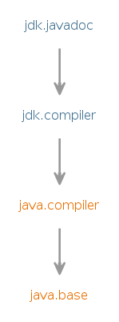

Module jdk.javadoc
Defines the implementation of the
system documentation tool
and its command line equivalent, javadoc.
javadoc
This module provides the equivalent of command-line access to javadoc
via the ToolProvider and
Tool service provider interfaces (SPIs),
and more flexible access via the DocumentationTool
SPI.
Instances of the tools can be obtained by calling
ToolProvider.findFirst
or the service loader with the name
"javadoc".
- Tool Guides:
- javadoc
- Module Graph:
- 
- Since:
- 9
- See Also:
- Documentation Comment Specification for the Standard Doclet
{kind=link}
-
-
Packages
Exports Package Description com.sun.javadoc Note: The declarations in this package have been superseded by those in the packagejdk.javadoc.doclet.com.sun.tools.javadoc This package and its contents are deprecated and may be removed in a future release.jdk.javadoc.doclet The Doclet API provides an environment which, in conjunction with the Language Model API and Compiler Tree API, allows clients to inspect the source-level structures of programs and libraries, including API comments embedded in the source.
-
Modules
Requires Modifier Module Description transitive java.compiler Defines the Language Model, Annotation Processing, and Java Compiler APIs.transitive jdk.compiler Defines the implementation of the system Java compiler and its command line equivalent, javac.
-
Services
Provides Type Description DocumentationTool Tool ToolProvider
-